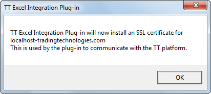
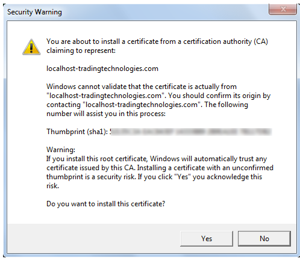
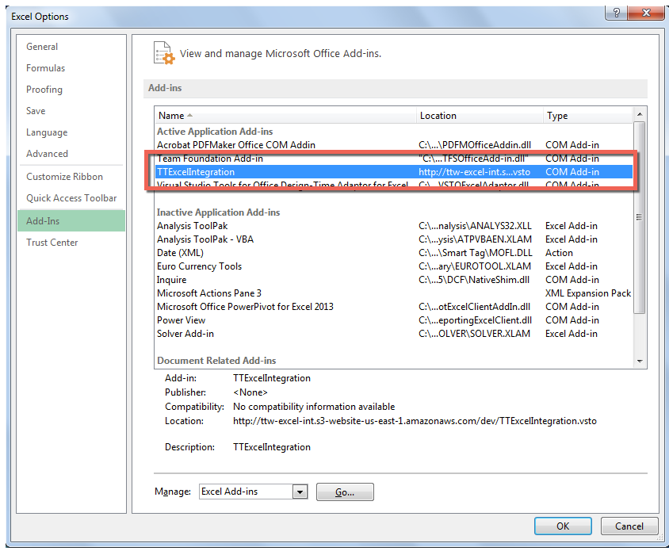

Start Excel.
The following dialog is displayed.

Note: The dialog might be obscured by the Excel window, so you might need to collapse or move the Excel window to see the dialog.
Click OK.
The following dialog is displayed.

Click Yes to install the security certificate.
If you use Windows Firewall, you might need to configure network access in the following dialog.

Click Allow access.
Optionally, to verify the add-in installed successfully, open the Excel Options, select Add-Ins, and confirm the list includes TTExcelIntegration, similar to the following:
